Backing Up Windows 10/ 11
Learn how you can back up your computer and your files.
Introduction
Your computer can fail at any time, it is important that you keep a backup of both your computer and also your files so that the impact of this occurring is minimised and you can get back up and running as quickly as possible with minimal data loss.
This guide will explain how you can and should back up your computer system, and why you should keep a separate back up of your files.
What do I need to back up my Computer and my Files?
To back up your computer you will need to purchase a portable/ external hard drive, these are available for as little as £50 from most major computer retailers, these vary in capacity and you will need to choose the appropriate capacity for your machine.
To back up your files you have two options, option one which is using cloud storage which involves using services such as iCloud, OneDrive, Dropbox, etc, the second is using a portable hard drive or flash drive.
Personally, I would advise against option one as cloud storage solutions often require a monthly or yearly subscription, therefore I advise with option two which requires you to purchase a portable hard drive or a flash drive to make a backup of your files.
The amount of storage that you need to back up your files will likely be less than that of your entire computer system, therefore you might only need a low capacity drive such as a flash drive which often provide you with a capacity of at least 32GB and can cost as little as £7 from most retailers, portable hard drives might be required if you are storing a lot of data such as photos, videos, music, etc, these will cost a bit more starting from £50 and they can be found at most retailers.
How do I tell what capacity hard drive I need to back up my computer?
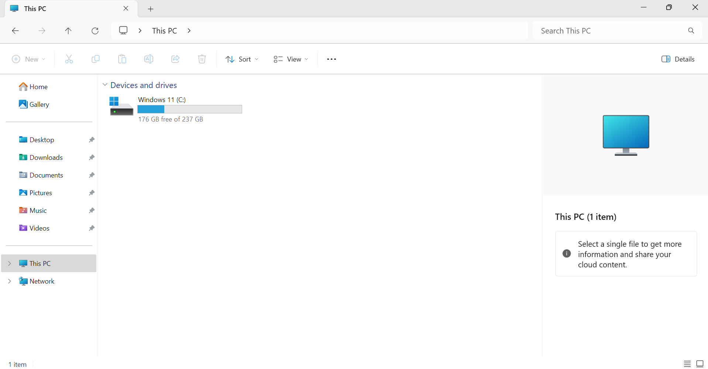It is really easy to determine the capacity you require to back up your computer system, you just need to launch "File Explorer" on your Windows 10/ 11 PC and navigate to "This PC" which can be found in the navigation pane.
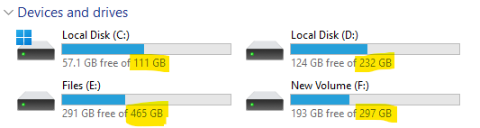Once you are at the "This PC" page, you will see a list of all the storage drives that are attached to your computer
You will need to purchase a hard drive that is larger than the capacity shown, for example on this computer system I would need to purchase a 2TB storage drive because I have roughly 1200GB of storage capacity on my computer system and I want to have plenty of space free so that I can effectively back up this computer system at this present moment in time and in the future. A 2TB hard drive will cost between £65-£95.
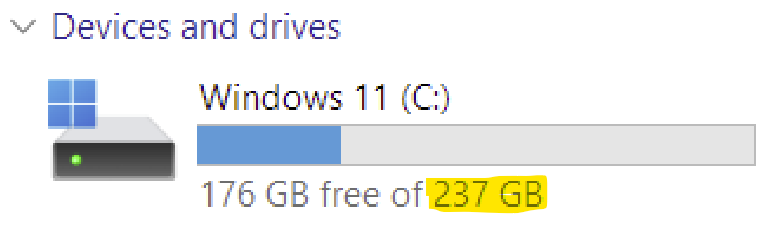This is an example of a computer system with a low-capacity storage drive, this computer can only store 237GB of data, therefore a smaller capacity portable hard drive is required, for this computer I would need a 500GB portable hard drive which would cost around £45, however these low-capacity portable hard drives are becoming harder to come by so I would likely end up purchasing a larger 1TB portable hard drive which would cost around £55-£70.
You will also need to purchase a small capacity USB flash drive, this is so that you can restore your PC from your backups even if your PC is no longer booting, for this you will be looking at a low-end drive with at least 8GB capacity, these can be found for as little as £7.
How do I tell what capacity flash drive/ hard drive I need to back up my files?
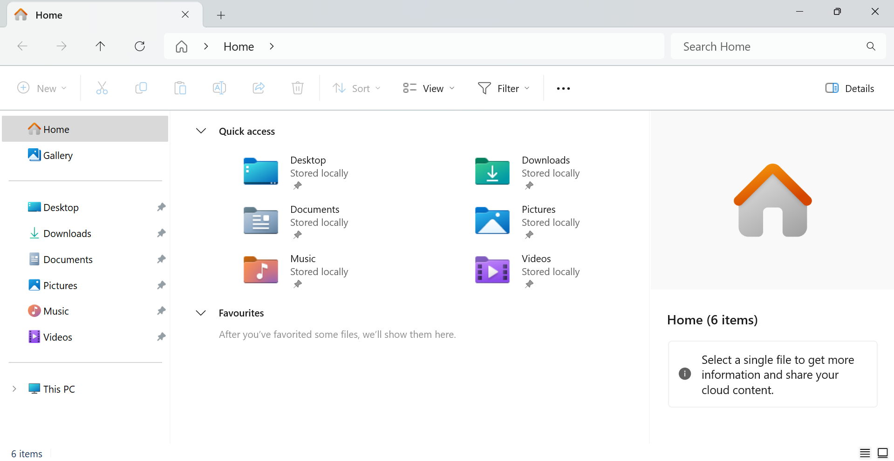Most people store their files in the built in File libraries, such as the Downloads folder, Desktop folder, Documents folder, Pictures folder, etc, so this is where you will determine the type and capacity you need to back up your files.
This is where it gets easy, just follow the steps listed below and you will be able to easily determine the capacity you require, this will allow you to also determine the type of storage drive you need.
- Select all of the libraries, you can do this by holding down control (ctrl) key on your keyboard and click on each of the six folders. If other folders a present ignore these as they are located within the 6 main libraries.
- Once you have selected all of the libraries you then need to right click on one of the highlighted folders and then click on the properties button.
You should now see a screen that looks something like this, you need to pay attention to the "Size on disk:" as this refers to the amount of space that your files take up, as you can see on this computer system my files take up 4.45GB of space.
As a general rule of thumb, you should always get a higher capacity than you require, I would require an 8GB flash drive to store all of my files but I should opt for a larger 32GB flash drive instead for future proofing.
Follow the table below to determine the storage type you need and the capacity you need.
| Size on disk | Capacity to buy | Type to buy |
|---|---|---|
| Less than 16GB | 32GB | Flash Drive |
| 16GB to 32GB | 64GB | Flash Drive |
| 32GB to 64GB | 120GB | Flash Drive |
| 64GB to 128GB | 256GB | Flash Drive |
| 128GB to 256GB | 512GB | Hard Drive |
| 256GB to 512GB | 1TB | Hard Drive |
| 512GB to 1TB | 2TB | Hard Drive |
| Over 1TB | 2TB or larger | Hard Drive |
How do I backup my files?
If you have purchased a new portable hard drive or a new flash drive, you will need to format it before you can proceed.
If you have already formatted your portable hard drive or flash drive and have already used it to back up your files, then do not format your drive.
You can learn about formatting your new portable hard drive or flash drive by reading the helpful guide featured on Windows Central, link is below. You need to make sure that you are formatted in NTFS.
Windows Central: How to format a new hard drive on Windows 10
It is really easy to back up your files in Windows 10/ 11, all you need to do is select all 6 of the libraries by holding the control (ctrl) button and clicking on them, you then just need to drag the folders to your portable hard drive/ flash drive.
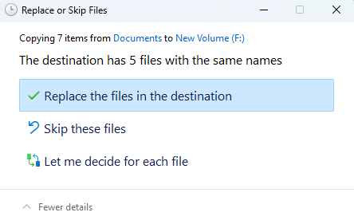If you see a message that says that the destination has files with the same names, you need to click on "Replace the files in the destination", this is because you might have edited documents etc, if you know the exact files that have been modified you can click "skip these files" and manually replace the files, this will reduce the amount of time it will take for the backup to complete and reduce the amount of wear on your drive.
You have now successfully made a backup of all your files, you should do this at least every three months, preferably once a month.
How do I back up my computer system?
To back up your Windows 10/ 11 computer system, you need to have an appropriate portable hard drive that is large enough to store a complete backup of your computer system.
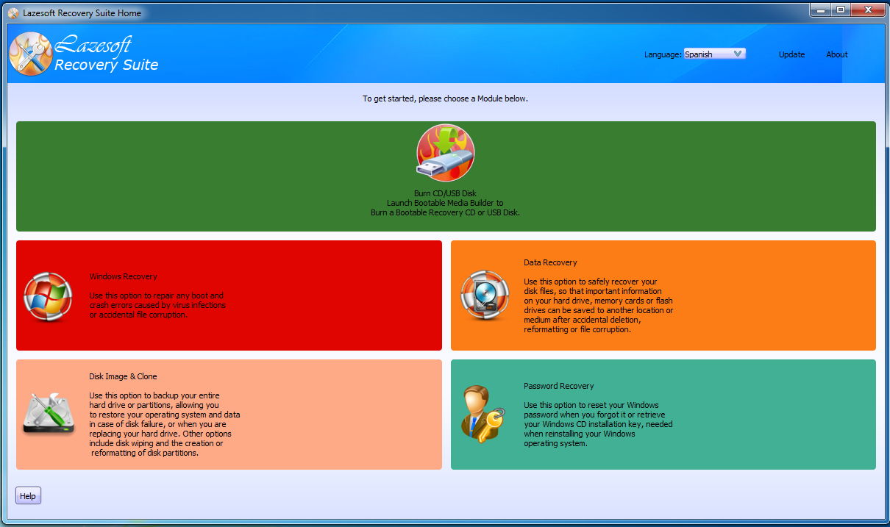The Lazesoft Recovery Suite is free (personal use only/ home licence) and makes it very easy to make a backup of your computer system, it might look a bit dated but it is fully compatible with Windows 11, you can use it to back up any computer that is running Windows XP or later.
You can download the free home licence version of the Lazesoft Recovery Suite using the link below.
Download Lazesoft Recovery Suite. (Home Licence)Before you continue, you will need to format your portable hard drive if you have not already done so, you will need to format your hard drive using the guide linked below, make sure you use the NTFS format.
If you have already formatted your portable hard drive as NTFS you can continue.
Windows Central: How to format a new hard drive on Windows 10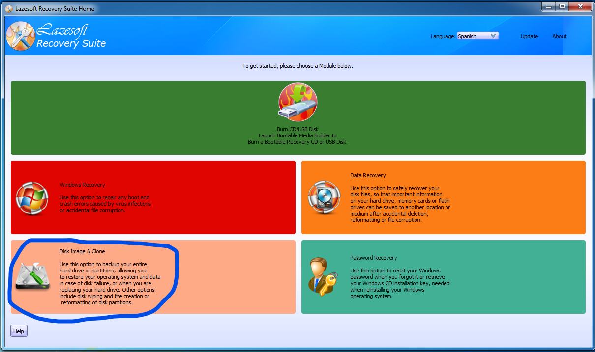
Now that you have installed and launched the Lazesoft Recovery Suite, and connected your portable hard drive to the computer, you should see an option that says "Disk Image & Clone" you need to select this option.
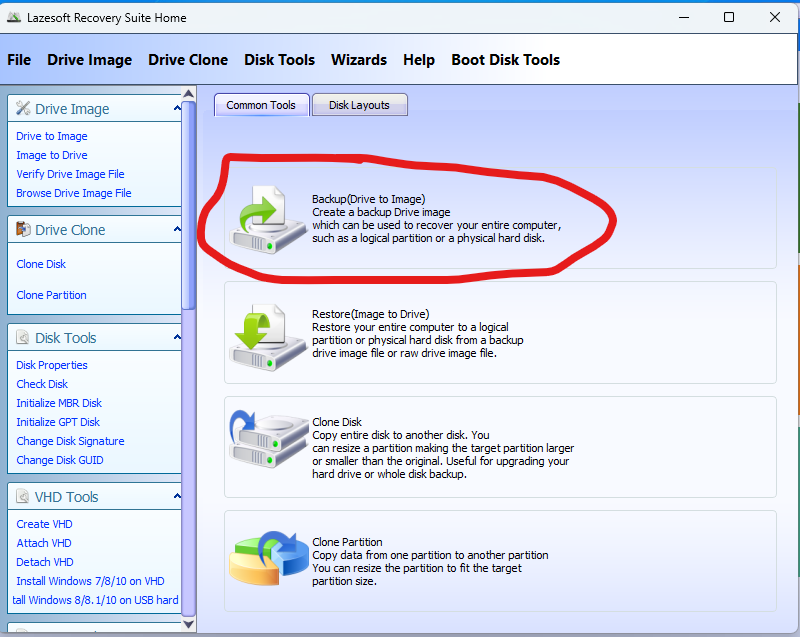You should now see a screen that looks like this, you want to click on "Backup (Drive to Image)", this will allow you to copy and create a backup of your computer system and store it on your portable hard drive, you can restore your PC from this backup at a later point in time.
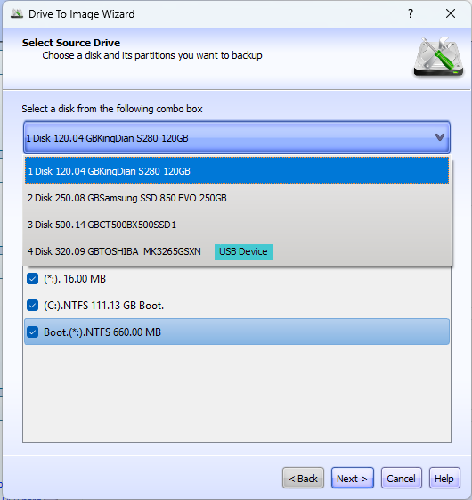You should now see a screen that looks like this, you can click on the combo box to reveal all of the drives on your system, make sure you remember the disk number and the capacity, DO NOT SELECT THE USB DEVICE as this is your portable hard drive. Once you have ticked all of the partitions you can click "Next >" to continue.
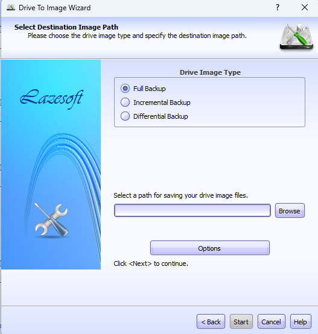You should now see a screen that looks like this, you should select the "full backup" option, then click the browse button to select the destination for the backup you are going to create.
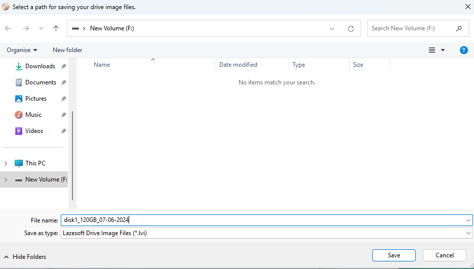You now need to navigate to your portable hard drive directory; you also need to provide the name of your backup and click save.
I advise you to use this naming convention disk(Num)_(capacity)_(date) as this will allow you to easily recognise the drive that the backup is for along with the date that the backup was made, for example if I was to backup disk 1 which has a storage capacity of 120GB it would be "disk1_120GB_07-06-2024" this is the best way of ensuring that you restore from the latest backups and to the correct disk.
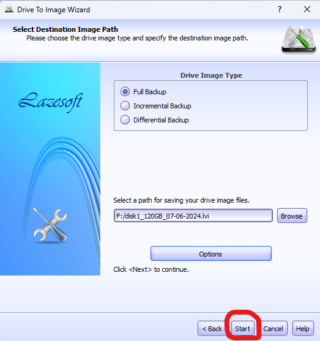Now that you have selected a valid path and file name, you should see it in the text box, now you can start the backup process by clicking on the start button
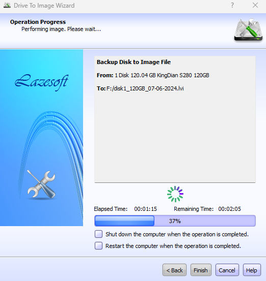You should see this screen, keep your PC on and plugged in whilst you are creating the backup, this might take a long time so be patient.
When you see a message that reads "The operation completed successfully." you have successfully made a backup of your computer, you can now click finish and you are done.
If you have more than one storage drive on your computer, you will need to repeat this process for each of the drives, you should also make a backup of your computer at least twice a year, ideally you should make a backup every three months.
If you have not already done so, you need to create a recovery media, this will allow you to restore your computer from the backup you have created in the event that your computer becomes unbootable or unstable.
Creating the recovery media
To create the recovery media, you need to have installed the Lazesoft Recovery Suite, you can find the download link in the "How do I back up my computer system?" section of this guide, you must also have a USB flash drive that you do not mind being erased and has at least 8GB of capacity.
You need to insert your USB flash drive prior to launching the Lazesoft Recovery Suite, if you have launched the software before doing this you will need to close and reopen it.
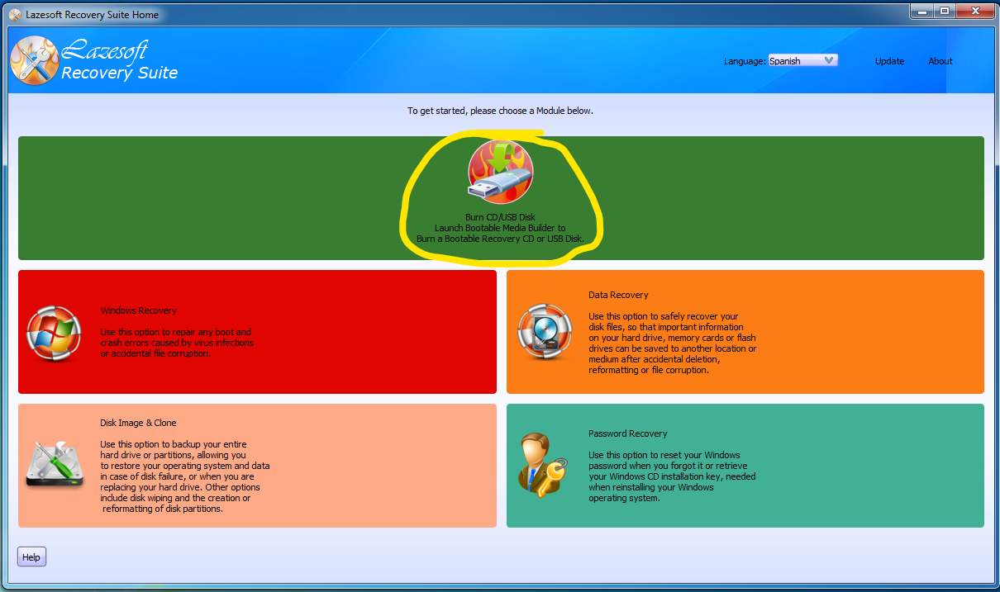Once you have launched the Lazesoft Recovery Suite, you need to click on "Burn CD/USB Disk".
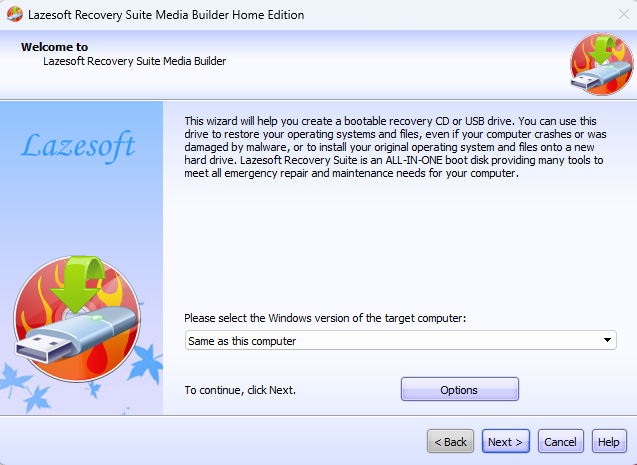You should see a screen that looks something like this, you need to make sure the "same as this computer option has been selected", then you need to click next.
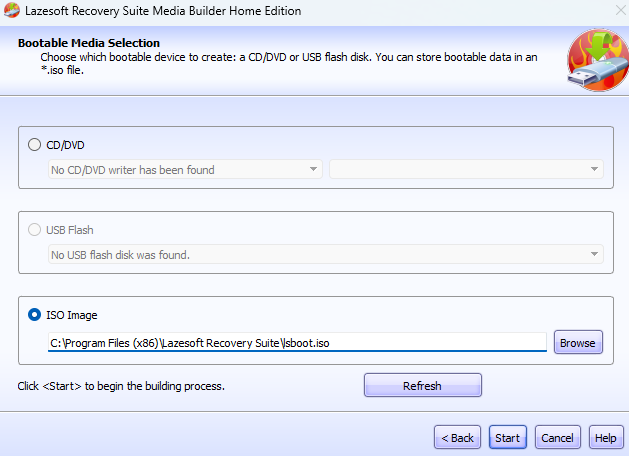You should see a screen that looks similar to this, you want to click on ISO Image, then click the start button.
You might be asking why I am telling you to create an ISO Image instead of USB Flash, this is because the USB will not boot on modern PCs if you use the built in USB creator.

You should see this message after a few minutes, this means that the ISO was created successfully and placed in the "C:\Program Files (x86)\Lazesoft Recovery Suite\lsboot.iso" directory, now click cancel and close the Lazesoft Recovery Suite as you will not need it for the next steps.
The file required to create the bootable USB recovery tool is located at "C:\Program Files (x86)\Lazesoft Recovery Suite\lsboot.iso", you now need to download a bootable USB creator called Rufus, you can find the download link below:
Download Rufus 4.5 Portable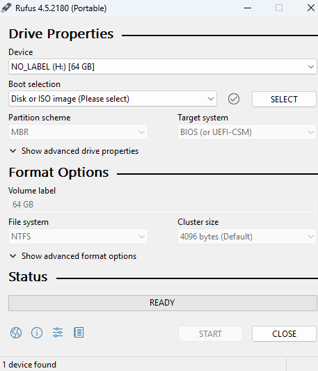
Once you have downloaded Rufus, you need to run it, you should now see a screen that looks like this, you want to verify that the correct USB flash drive has been chosen, then you want to click on the "select" button.
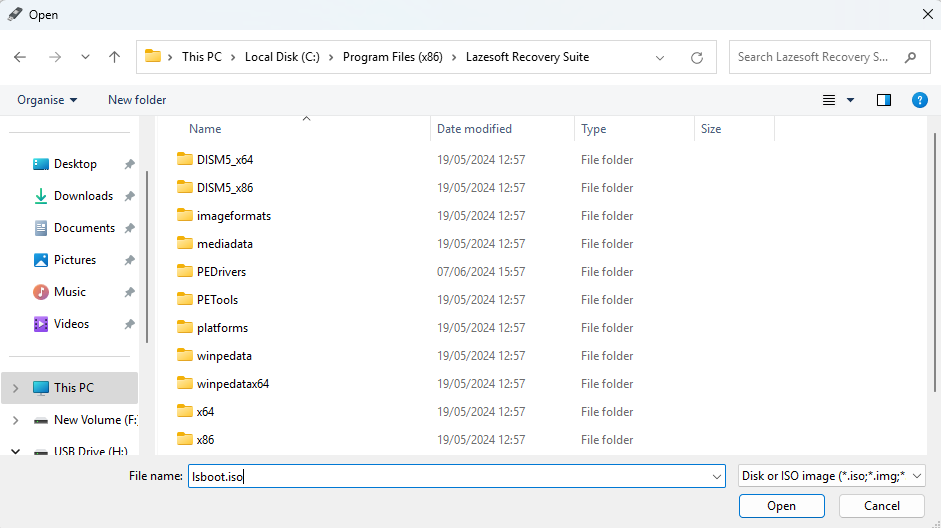In the address bar at the top of the window, you need to copy and paste this "C:\Program Files (x86)\Lazesoft Recovery Suite\" without the inverted comma, in the file name field you need to enter "lsboot.iso" without the inverted comma, then click the "open" button.
Now, click on the "START" button, then click "OK" on the popup that will appear, then click "OK" to Confirm that you accept that all of the data will be erased from the USB flash drive.
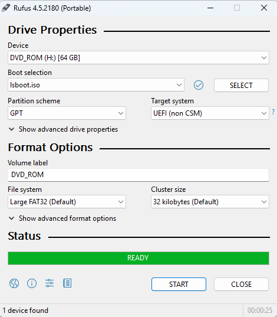When the bar at the bottom turns green and states "Ready", this means that the Bootable Recovery Media has been successfully created.
If you have a legacy BIOS PC you will need to change the partition scheme from "GPT" to "MBR" in Rufus if your device is not listing the USB as a boot option in the boot menu, you will then need to run the Rufus USB creator again so that the recovery media is compatible with your PC.
How do I use the recovery media to restore my PC from a backup?
It is really easy to restore your PC from a backup using the bootable recovery media that you have created; the hardest part is actually booting the recovery media as the process is different for different PC manufacturers. You need to make sure that the USB is inserted into your computer before you attempt to boot up the recovery media.
If Windows is not booting at all, you will need to contact your PC manufacturer for more guidance, if you can boot your pc or are seeing a blue screen that says "Automatic Repair" you will be able to boot from the USB with ease.
To enter Automatic Repair mode it is really easy, you just need to power your PC off whilst it is booting up three times in a row, this will make your computer think there is a fault and it will launch the automatic repair screen.
If your computer is booting into Windows, you can boot from the USB by holding the shift button and clicking restart on either the logon screen or the start menu.
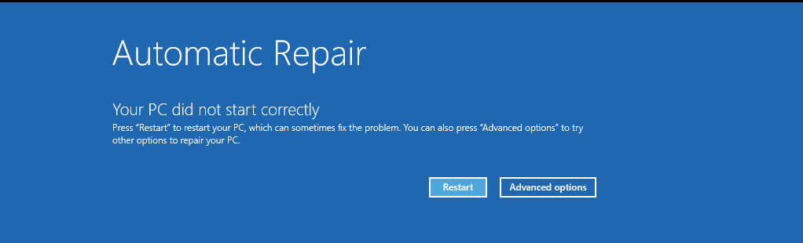If you have chosen to launch Automatic Recovery, you need to click on advanced options.
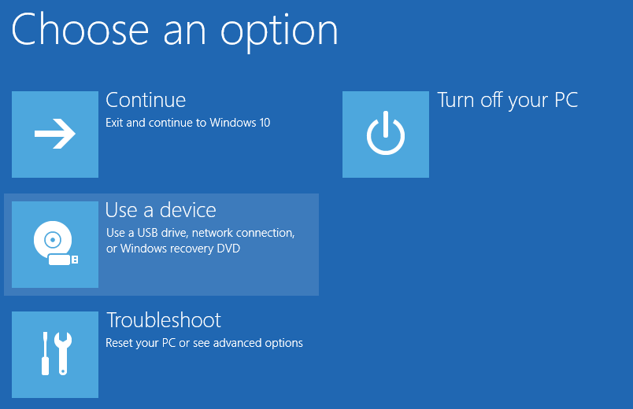You should now see an option that says "Use a device" this is the option you want as it should allow you to boot from the portable USB.
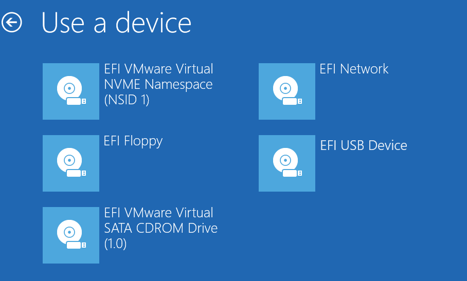You should now see a screen that looks something like this, you need to click the EFI USB Device option, this might be a slightly different name, if it does not work you will need to try all of the options that say USB.
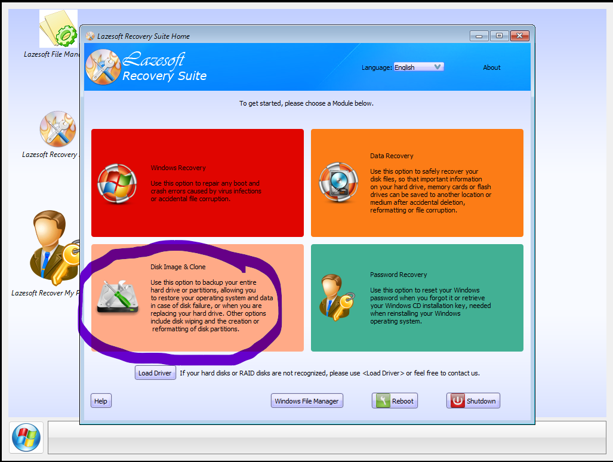You should now see the Lazesoft Recovery Suite, you now need to click on "Disk Image & Clone", make sure that your portable hard drive is also plugged in.
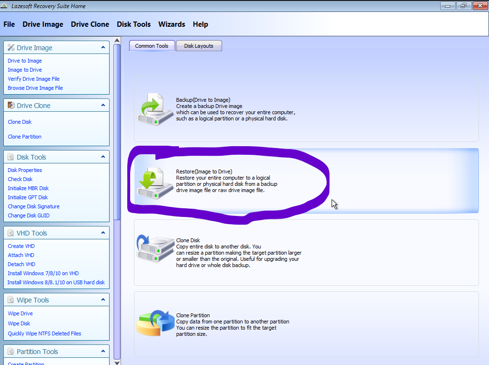You need to click on "Restore(Image to Drive)", this will allow you to restore your PC to the backup you made previously.
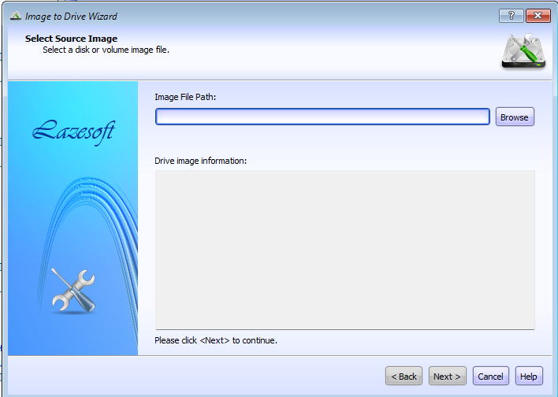You need to find your backup to continue, to do this you need to click browse to find your backup image.
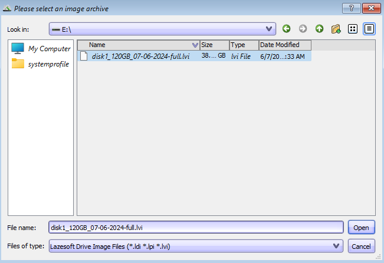You need to find your backup image file, to do this you need to click on "My Computer", then click on your external hard drive, then double click on the backup you wish to restore. You can now click "Next >" to continue.
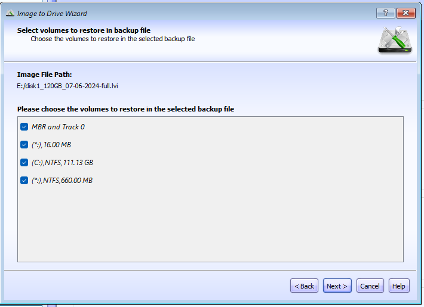If you are asked to select the volumes you wish to restore, you want to make sure that all of the volumes are selected, then click the "Next >" button.
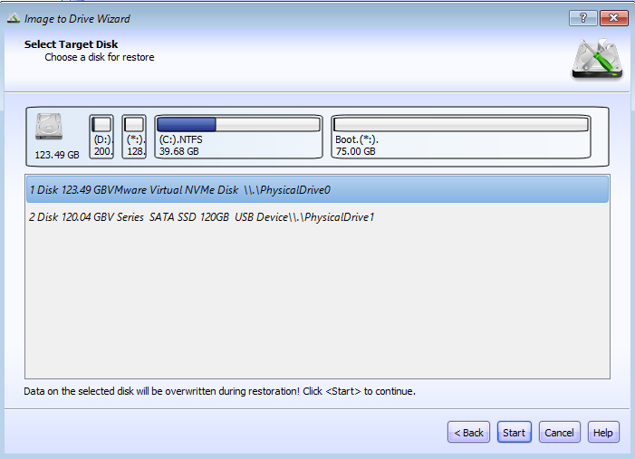You will now be asked to select the target disk, you need to make sure that this is the same disk as the backup you selected, otherwise it will fail or overwrite the wrong disk on your system. Once you are happy that you have chosen the correct drive, you can click "Start" to start the restoration process.
Restoring from the backup will delete and remove any data on your system that was added since the last backup, I advise that you backup any important files before you begin to restore your drive as they will be deleted from your system permanently.
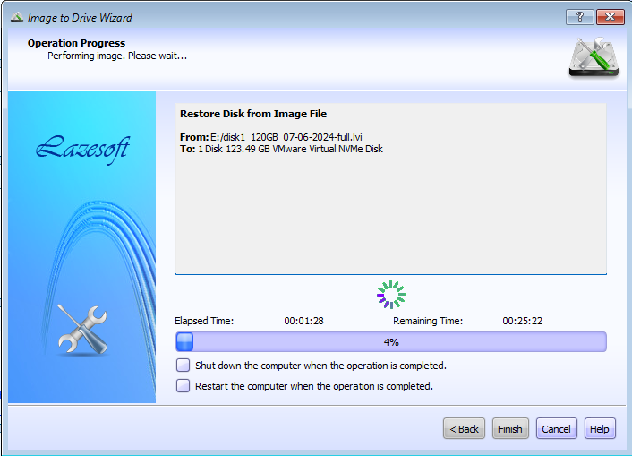It will take a long time for your computer to restore from the backup, please ensure that you plug your PC in if it is running on battery, once the restore has completed you can click on finish and restart your computer.
You should have now successfully restored your PC from your backup file.
Page Updated: 08/06/2024
Page Author: Hackboto